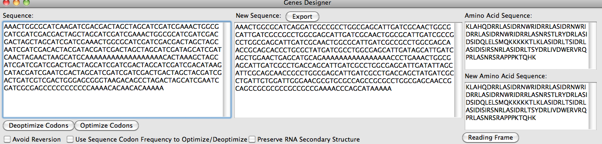

Optimizing Sequences
Back to Main Help Navigation Page
Optimize or deoptimize a sequence with respect to codon frequency without changing amino acid sequence

A random nucleotide sequence optimized with respect to E. coli K-12 codon frequency
The sequence box is linked with the sequence box on the Mutations panel, so changes in one will be reflected in the other. Optimized sequences can be exported as FASTA files.
Options
- Avoid Reversion--(de)optimizes sequence ensuring that the amino acid sequence is unchanged and a two nucleotide difference between codons (when possible)
to prevent new sequence reverting to the original
- Use Sequence Codon Frequency--Computes the codon frequency of the current sequence and uses the frequencies to optimize. Otherwise, the codon frequency of the
currently selected organism in the Codon Usage database is used. Different organisms can be selected/added/deleted using the databases menu.
- Preserve RNA Secondary Structure--Computes an approximate RNA secondary structure and mutates to preserve as much of structure as possible.
- Deoptimization Range--Nucleotide range to deoptimize sequence between
- Optimization Range--Nucleotide range to optimize sequence between
Specific Optimizaiton
Allows optimization for select amino acids or codons rather than all of them. Detailed instructions are found on the optimization panel.